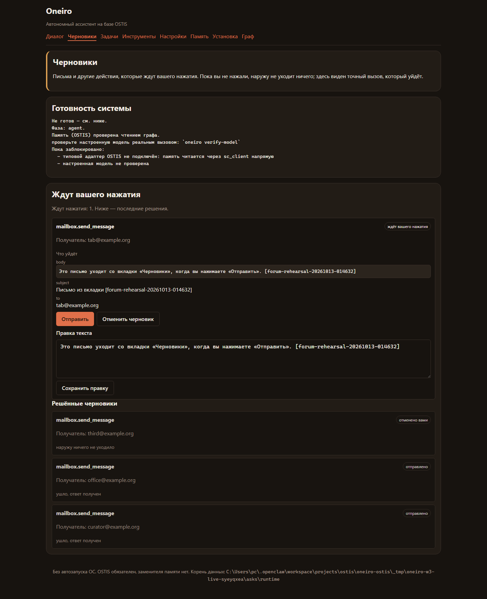
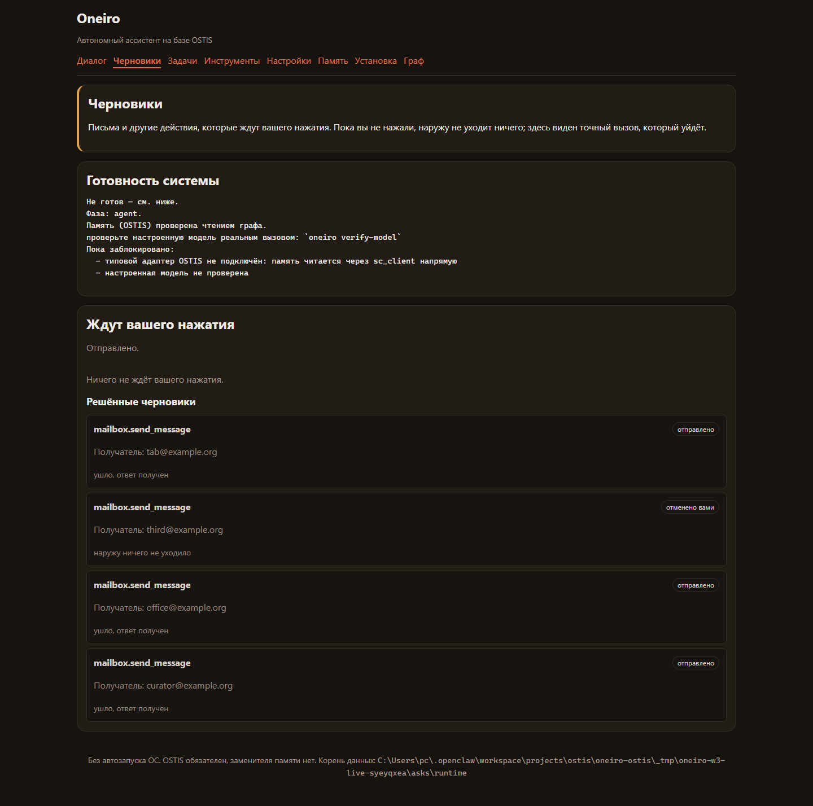
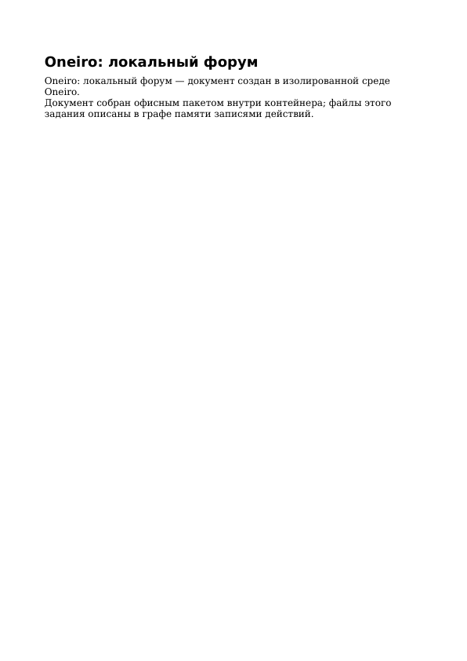
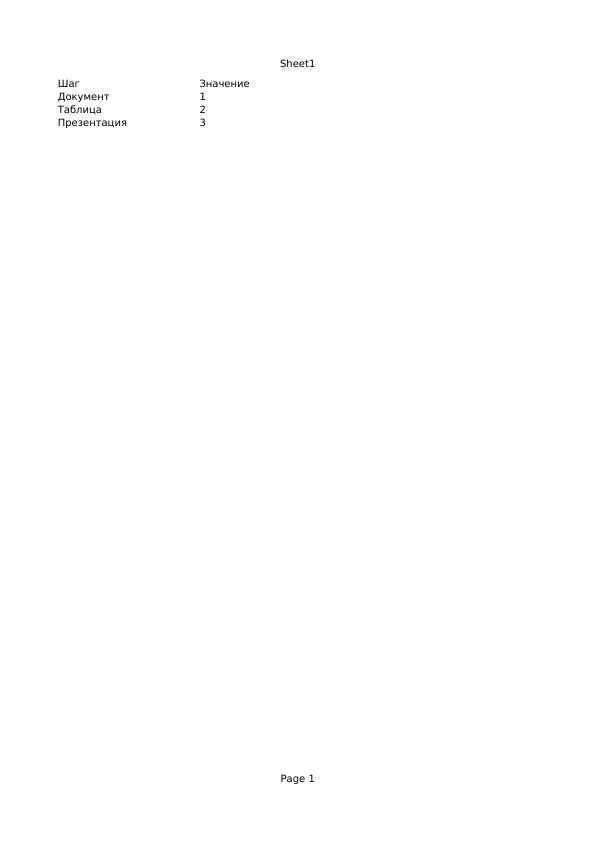
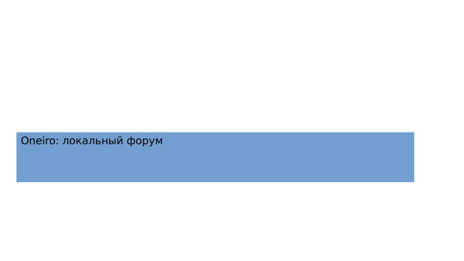
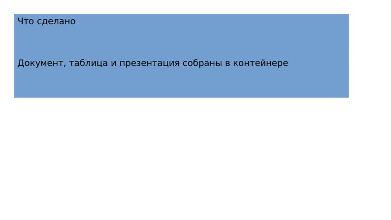

Oneiro: локальный показ проверен
Это статические доказательства, не работающий агент. Почта и бот — тестовые транспорты. Офисные файлы созданы настоящим LibreOffice в контейнере. Рабочая модель — Mistral Codestral. Самоулучшение не доказано; кандидат отклонён.
Полный pytest: 767 пройдено. Проверка почты/черновиков: 67/67. Подписанный вебхук: 22/22. Запуск всего сценария: 80,15 секунды, не длительность человеческой речи.
Русская речь · Инструкция показа
Черновик до нажатия
Открытие страницы ничего не отправляет. Карточка показывает точные аргументы будущего вызова.

Тот же экран после нажатия
В независимом журнале появился ровно один соответствующий вызов. Решение перечитано из графа.

Документ — одна страница

Таблица — одна страница

Презентация задания — две страницы
Это результат офисного задания, не слайды выступления.


Создание задачи вебхуком, подготовка черновика и офисная работа — отдельные явно запускаемые действия. Автоматическая сквозная цепочка не заявляется. Настоящие аккаунты не подключены, полная Windows-приёмка после изменений не повторена. Коды команд, размеры, контрольные суммы и записи: машинные доказательства.